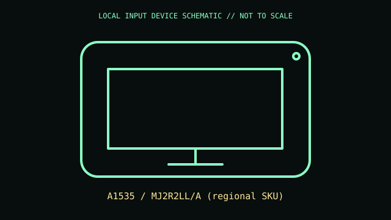

[ MICE AND TRACKBALLS // IDENTIFIED COMPONENT ]
Apple Magic Trackpad 2
Rechargeable multi-touch trackpad with Force Touch input and haptic click feedback.

MODEL IDENTIFICATION: A1535 / MJ2R2LL/A (regional SKU). Confirm complete SKU, package, region, and revision before compatibility claims.
Model specifications
| Catalog leaf | Mice and trackballs |
|---|---|
| Exact model / identifier | A1535 / MJ2R2LL/A (regional SKU) |
| Physical mechanism and primary specifications | Bluetooth wireless; Lightning connector for charging and wired pairing; Multi-Touch surface; Force Touch sensing and haptic feedback; internal rechargeable battery. |
| Compatibility and interface caveats | A1535 is Lightning-era; newer USB-C Magic Trackpad models differ. Force Touch and gesture semantics require supported macOS; other hosts may expose limited pointer behavior. |
| Revision identification | Record full product label, software/firmware version, and supplied accessories. Product-family versions may differ in connector, protocol, features, or host requirements. |
Preservation and service
Keep glass surface free of grit; clean with soft lint-free cloth, avoid edge impacts, and do not open sealed battery enclosure.
Record condition and test setup separately from vendor specifications, including host OS and software.
Primary manufacturer sources
- Apple Magic Trackpad technical specificationsManufacturer documentation; confirm exact PID, regional suffix, and hardware revision on the unit.
- Apple trackpad manualsManufacturer documentation; confirm exact PID, regional suffix, and hardware revision on the unit.
Retain relevant manual revisions with the equipment record; vendor support pages can change.